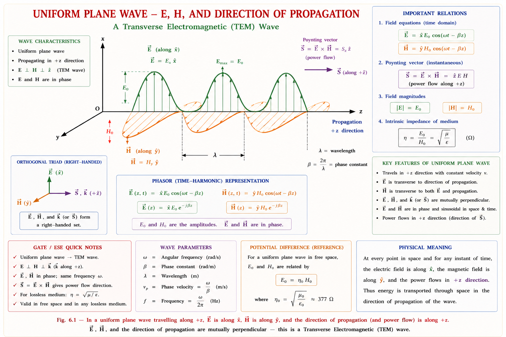
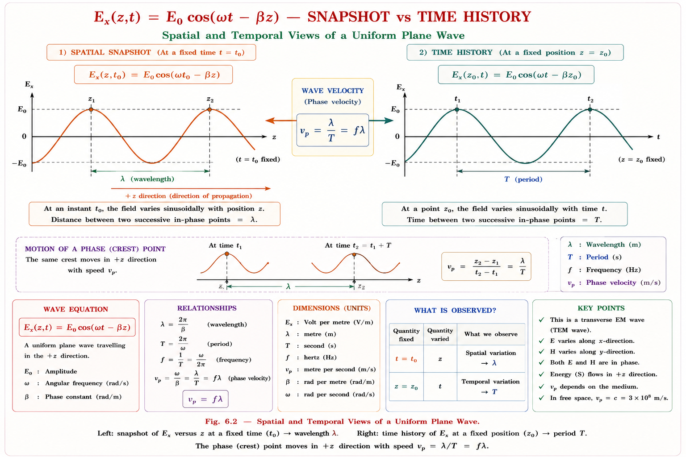
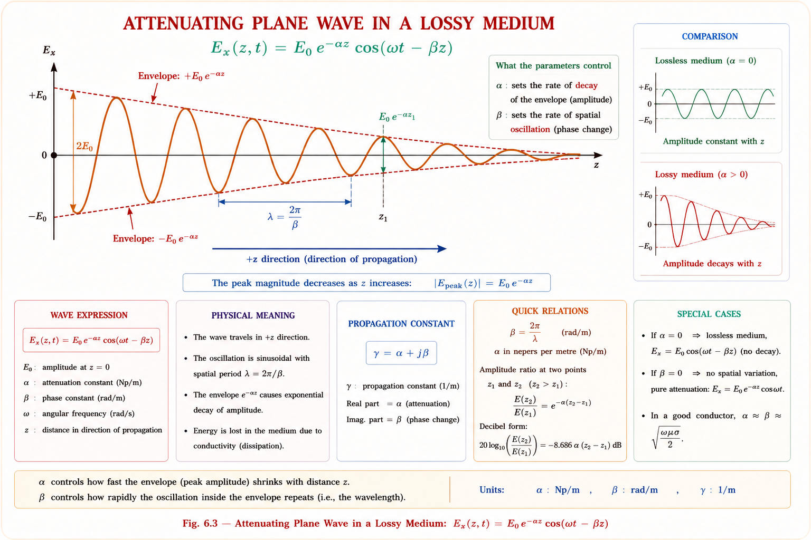
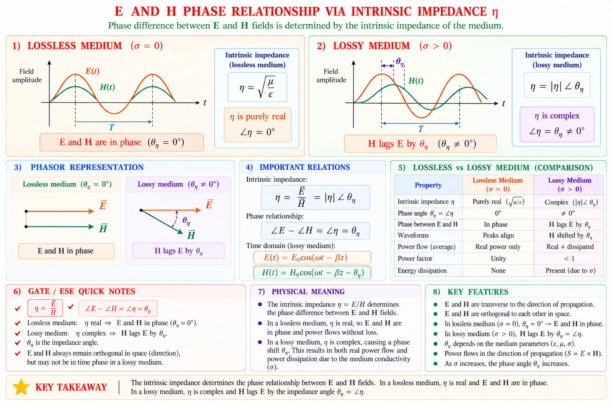
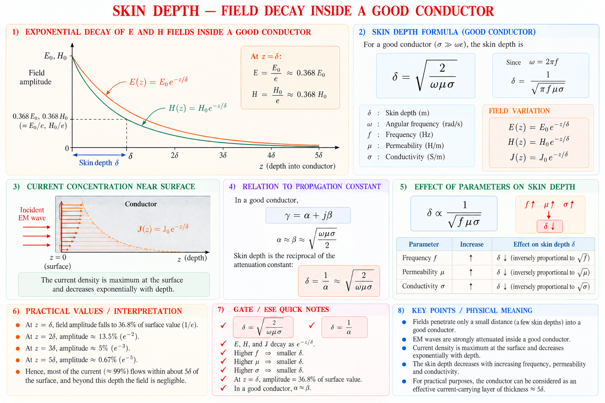

Plane wave concept, wave equations from Maxwell's equations, propagation constant (α, β), and intrinsic impedance of the medium — full derivations for lossless, lossy, and good-conductor media with GATE & IES exam-ready insight.
Every wireless signal you have ever used — a mobile call, a Wi-Fi packet, a satellite TV broadcast, a radar pulse — travels through space as an electromagnetic wave. Maxwell's equations, covered in the previous chapter, tell us that a time-varying electric field produces a time-varying magnetic field and vice-versa. When this mutual generation becomes self-sustaining and detaches itself from the source, it propagates outward as a wave carrying energy — with no wire, no medium contact, nothing but space (or a dielectric/conducting medium) required.
Close to the antenna, the wavefronts are curved (spherical), because energy spreads out radially from a point source. But far away from the source — technically, in the far field — the radius of curvature becomes so large that a small patch of the wavefront looks essentially flat. This idealised, flat, infinite wavefront is what we call a uniform plane wave. It is the simplest possible solution to Maxwell's equations and is the foundation on which transmission line theory, waveguide theory, antenna theory, and radar/microwave engineering are all built.
We rarely deal with true plane waves in practice — every real antenna radiates a spherical wave. But at large distances (the radiating far-field), a small observation window sees an almost perfectly flat wavefront. This is exactly why plane wave theory is taught first: it is mathematically tractable, and it is an excellent local approximation to every real wave.
Before plane wave theory, engineers could analyse circuits only with lumped elements (R, L, C) where voltage and current are assumed to act instantaneously everywhere in the circuit. This assumption breaks down completely at high frequencies and over long distances — a signal takes finite time to travel, and its amplitude and phase change as it propagates. Plane wave theory gives us the mathematical machinery (the wave equation, propagation constant, and intrinsic impedance) to precisely predict how far, how fast, and how much attenuated a wave becomes as it travels through any medium — air, glass, seawater, or a conductor.
Picture spectators in a stadium doing "the wave" — each person stands up and sits down a fraction of a second after their neighbour. No single person travels around the stadium, yet a wave pattern clearly moves around it. An EM wave works similarly: no charge physically travels from the transmitter to the receiver. Instead, the electric field at each point in space oscillates a fraction of a second after the field at the neighbouring point, because each oscillating E-field induces an oscillating H-field next to it, which in turn induces the next E-field — and this disturbance pattern propagates outward at the speed of light in that medium.
A uniform plane wave is formally defined as a wave in which the \(\mathbf{E}\)-field (and \(\mathbf{H}\)-field) has the same magnitude and phase at every point on a plane perpendicular to the direction of propagation. If the wave travels along \(+z\), then \(\mathbf{E}\) and \(\mathbf{H}\) depend only on \(z\) and \(t\) — not on \(x\) or \(y\) at all. This is what makes the mathematics one-dimensional and elegant, even though the wave exists throughout all of 3-D space.

| Domain | How the Plane-Wave Concept Appears |
|---|---|
| Power Systems | Travelling-wave theory of lightning surges and switching transients on transmission lines uses the same wave-equation mathematics as EM plane waves. |
| Wireless Communication | Mobile, Wi-Fi and satellite signals are treated as locally-plane waves once they are many wavelengths from the transmitting antenna (far field). |
| Microwave & Radar Engineering | Radar pulses propagate, reflect off targets, and return — all analysed using plane wave attenuation (α) and phase (β) constants. |
| Optical Fibre / Photonics | Light inside a fibre core is modelled using the same Helmholtz wave equation derived from Maxwell's equations for a dielectric medium. |
| EMI/EMC & Shielding | Shielding effectiveness of an enclosure is calculated from how fast a plane wave attenuates (skin depth) inside the conducting shield material. |
| Biomedical Engineering | Microwave hyperthermia and MRI RF coils rely on predicting how EM waves penetrate and attenuate inside tissue (a lossy dielectric medium). |
Because the radius of curvature of the wavefront grows with distance r. Over the small aperture of a receiving antenna, the wavefront curvature becomes negligible, so locally the wave looks flat and uniform — exactly like the Earth looking flat to a person standing on it.
Then the Poynting vector (\(\mathbf{S} = \mathbf{E} \times \mathbf{H}\)), which gives the direction and density of power flow, would not point purely along the propagation direction — power would leak sideways. Maxwell's equations force \(\mathbf{E} \perp \mathbf{H} \perp \text{direction of travel}\) precisely so that all the power flows efficiently forward.
This describes most real antennas in their near field, and is mathematically far harder to analyse — it requires full 3-D solutions instead of the simple 1-D wave equation. Engineers always try to work in the far field, where the uniform plane wave approximation becomes valid, to simplify calculations.
Students often think a "plane wave" means the wave is flat like a 2-D sheet. In reality, a plane wave exists throughout all of 3-D space — it is the wavefront (a surface of constant phase) that is planar, not the wave's extent. Also, no truly uniform plane wave can exist physically (it would require infinite power to be present everywhere in space at the same instant) — it is always an idealised, local approximation.
We now derive, from first principles, the equation that every uniform plane wave must satisfy. The derivation uses only two of Maxwell's four equations (Faraday's law and the Ampère–Maxwell law) together with one vector identity. This is one of the most important derivations in the entire EMFT syllabus and appears, in some form, in almost every GATE EE paper.
Assume a source-free region (no free charge, \(\rho_v = 0\)) of a linear, homogeneous, isotropic medium with permittivity \(\varepsilon\), permeability \(\mu\), and conductivity \(\sigma\). Maxwell's two curl equations in time domain are:
E = electric field intensity (V/m); H = magnetic field intensity (A/m); \(\mu\) = permeability of the medium (H/m), governs how strongly the medium supports magnetic flux; \(\varepsilon\) = permittivity (F/m), governs how strongly the medium supports electric flux; \(\sigma\) = conductivity (S/m), governs how much conduction current \(\sigma\mathbf{E}\) flows for a given \(\mathbf{E}\). Setting \(\sigma = 0\) gives the lossless (perfect dielectric) case used for most introductory wave analysis.
To eliminate \(\mathbf{H}\) and obtain an equation purely in \(\mathbf{E}\), take the curl of both sides of Faraday's law:
Replace \(\nabla \times \mathbf{H}\) using the second Maxwell equation:
Use the standard vector calculus identity for the curl of a curl:
In a source-free, charge-free region, Gauss's law gives \(\nabla \cdot \mathbf{E} = \rho_v/\varepsilon = 0\), so the first term vanishes. This leaves us with the clean result:
Combining Steps 2 and 3:
By an exactly identical procedure — starting from the curl of the Ampère–Maxwell law instead — we get an equivalent equation for \(\mathbf{H}\):
The first term on the right (\(\mu\sigma \partial\mathbf{E}/\partial t\)) represents energy dissipation due to conduction losses in the medium — it is the diffusion-like term, exactly analogous to the heat equation. The second term (\(\mu\varepsilon \partial^2\mathbf{E}/\partial t^2\)) represents energy storage and wave propagation — it is the term responsible for true wave-like behaviour. A lossless medium (\(\sigma = 0\)) keeps only this second term, giving the classical, undamped wave equation.
For time-harmonic fields, we represent every field quantity as a complex phasor, with the real instantaneous field recovered via \(\mathbf{E}(z,t) = \text{Re}[\mathbf{E}_s(z) e^{j\omega t}]\). Every time derivative \(\partial/\partial t\) simply becomes a multiplication by \(j\omega\). Substituting into the wave equation:
Defining the complex quantity \(\gamma^2 = j\omega\mu(\sigma + j\omega\varepsilon)\), we arrive at the compact and universally-used Helmholtz wave equation:
Here \(\gamma\) is called the propagation constant of the medium — its real and imaginary parts (derived fully in Section 6.4) determine exactly how the wave attenuates and how its phase changes with distance. Every plane wave problem ultimately reduces to finding \(\gamma\) for the medium in question and then solving this single second-order differential equation.
The time-domain wave equation (Step 4) contains first and second time derivatives and is a real PDE. The phasor wave equation (Helmholtz form) contains no time derivative at all — time dependence is absorbed into \(\gamma^2\) and the assumed \(e^{j\omega t}\) convention. GATE frequently tests whether you can correctly convert between the two using \(\partial/\partial t \rightarrow j\omega\).
The most important special case — and the one GATE/IES test most heavily — is the lossless (perfect dielectric) medium: \(\sigma = 0\). Examples include free space (vacuum), dry air, and good-quality insulators such as Teflon or quartz at moderate frequencies. Setting \(\sigma = 0\) removes the dissipative term entirely from the wave equation, and the wave travels forever without losing energy (in the idealised theoretical model).
For a uniform plane wave travelling along \(+z\) with \(\mathbf{E}\) polarised along \(x\), \(\mathbf{E}\) depends only on \(z\) and \(t\): \(\mathbf{E} = E_x(z,t) \mathbf{a}_x\). The wave equation reduces from its full vector/Laplacian form to a simple 1-D PDE:
This is the classical wave equation that appears throughout physics — identical in form to the equation governing a vibrating string or sound waves in air. Its general solution (verified by direct substitution, d'Alembert's solution) is:
\(f_1(t - z/u)\) represents a wave travelling in the \(+z\) direction — as \(t\) increases, \(z\) must increase by the same proportion to keep the argument constant, so the waveform shifts forward. \(f_2(t + z/u)\) represents a wave travelling in the \(-z\) direction (a reflected wave, for example). The constant \(u\) is the velocity of propagation in the medium.
Substituting the travelling-wave solution back into the wave equation shows that \(u\) must equal:
For free space, \(\mu = \mu_0 = 4\pi \times 10^{-7}\) H/m and \(\varepsilon = \varepsilon_0 = 8.854 \times 10^{-12}\) F/m, giving:
When Maxwell first calculated \(1/\sqrt{\mu_0\varepsilon_0}\) using purely electrical and magnetic measurements (capacitor and inductor experiments — nothing to do with optics), he got a number matching the experimentally measured speed of light almost exactly. This led him to the revolutionary conclusion that light itself is an electromagnetic wave — unifying optics with electricity and magnetism for the first time.
For any other lossless dielectric medium, we define the relative permittivity \(\varepsilon_r\) and relative permeability \(\mu_r\) (usually \(\mu_r = 1\) for non-magnetic dielectrics):
In practice, almost every signal of engineering interest is sinusoidal (or can be decomposed into sinusoids via Fourier analysis). The time-harmonic forward-travelling wave is written as:
Here \(E_0\) is the amplitude, \(\omega = 2\pi f\) is the angular frequency, and \(\beta\) is the phase constant (rad/m) — it tells us how much the phase \((\omega t - \beta z)\) changes per metre travelled. For a lossless medium, \(\beta\) is purely:
The wavelength \(\lambda\) is the spatial distance over which the wave completes one full cycle, and the period \(T\) is the time for one full cycle. They are related to \(\beta\), \(u\), and \(f\) as follows:

Since \(u = \lambda f\) and \(u\) is fixed by the medium (\(u = 1/\sqrt{\mu\varepsilon}\)), increasing \(f\) must decrease \(\lambda\) proportionally. This is why higher-frequency systems (mmWave 5G, satellite Ku/Ka-band) use physically smaller antennas — the wavelength itself is smaller.
\(u = c/\sqrt{\mu_r \varepsilon_r}\) decreases — the wave slows down. This is exactly why light bends (refracts) when entering glass or water: a higher \(\varepsilon_r\) medium has a lower wave velocity, consistent with Snell's law and the refractive index \(n = \sqrt{\mu_r \varepsilon_r} \approx \sqrt{\varepsilon_r}\) for non-magnetic media.
Many students assume the wave velocity equals \(c\) (\(3 \times 10^8\) m/s) inside every medium. This is true only in free space / vacuum / air (\(\varepsilon_r \approx \mu_r \approx 1\)). Inside any dielectric with \(\varepsilon_r > 1\), the velocity is strictly less than \(c\) — always compute \(u = c/\sqrt{\mu_r\varepsilon_r}\) for the given medium before proceeding.
Real media are never perfectly lossless — every dielectric has some finite conductivity, and every conductor has some resistivity. The propagation constant \(\gamma\) is the single complex number that completely characterises how a wave behaves in any linear medium: how fast it decays (attenuation) and how fast its phase changes with distance (phase shift).
From the Helmholtz equation derived in Section 6.2, the propagation constant is defined as:
\(\alpha\) (alpha) = attenuation constant (Np/m, neper per metre) — it governs the exponential decay of the wave's amplitude as it travels: \(\text{amplitude} \propto e^{-\alpha z}\). \(\beta\) (beta) = phase constant (rad/m) — it governs how fast the wave's phase advances with distance, exactly as in the lossless case of Section 6.3.
The travelling wave solution in a general lossy medium becomes:
The term \(e^{-\alpha z}\) is an envelope that shrinks the amplitude exponentially as \(z\) increases, while \(\cos(\omega t - \beta z)\) is the oscillating carrier inside that shrinking envelope.

Squaring \(\gamma = \alpha + j\beta\) and equating real and imaginary parts with \(\gamma^2 = j\omega\mu\sigma - \omega^2\mu\varepsilon\) gives the standard closed-form results (derived in every standard EMFT textbook):
The single dimensionless ratio \(\sigma/\omega\varepsilon\), called the loss tangent (\(\tan\delta\)), tells us instantly whether a medium behaves more like a dielectric or more like a conductor at the frequency of interest:
| Regime | Condition | Physical Meaning |
|---|---|---|
| Lossless / Perfect Dielectric | \(\sigma = 0\) (\(\tan\delta = 0\)) | No conduction current at all; \(\alpha = 0\), wave never attenuates |
| Good (Low-Loss) Dielectric | \(\sigma/\omega\varepsilon \ll 1\) | Displacement current dominates; small but nonzero attenuation |
| Lossy / General Medium | \(\sigma/\omega\varepsilon \approx 1\) | Conduction and displacement currents comparable; use full \(\alpha, \beta\) formulas |
| Good Conductor | \(\sigma/\omega\varepsilon \gg 1\) | Conduction current dominates totally; simplified high-loss formulas apply (Section 6.6) |
Substitute \(\sigma = 0\) into the general \(\alpha\) formula — the bracket \([\sqrt{1+0} - 1] = 0\), so \(\alpha = 0\) identically. This confirms the lossless wave equation of Section 6.3 is simply the \(\sigma \rightarrow 0\) limit of the general theory — everything is consistent.
The loss tangent \(\sigma/\omega\varepsilon\) decreases as \(\omega\) increases (\(\omega\) is in the denominator). So the same lossy medium can behave like a "good conductor" at low frequency (AM radio) but like a "lossy dielectric" at very high frequency (mmWave) — this is exactly why submarine VLF communication uses very low frequencies to penetrate seawater.
For a fixed transmitted power, the received signal strength drops off faster with distance — the wave's penetration depth (\(1/\alpha\)) shrinks. This is precisely why AM radio (lower \(\sigma/\omega\varepsilon\) at MF) penetrates buildings better than high-frequency mmWave 5G, which is attenuated heavily even by walls and rain.
Students frequently forget that \(\varepsilon\) in the loss-tangent formula is the absolute permittivity \(\varepsilon = \varepsilon_0\varepsilon_r\) — not just \(\varepsilon_r\). Always substitute \(\varepsilon = \varepsilon_0\varepsilon_r\) (and likewise \(\mu = \mu_0\mu_r\)) before computing \(\sigma/\omega\varepsilon\), or the numerical answer will be wrong by a factor of \(\varepsilon_r\).
Just as a transmission line has a characteristic impedance \(Z_0\) relating voltage and current, every medium has an intrinsic impedance \(\eta\) relating the electric field to the magnetic field of a plane wave travelling through it. It is one of the two most-tested quantities in this chapter (along with \(\gamma\)) and is essential for boundary-condition (reflection/transmission) problems at interfaces between two media.
From Faraday's law applied to the assumed plane-wave fields \(E_x = E_0 e^{-\gamma z}\) and \(H_y = H_0 e^{-\gamma z}\), one obtains the ratio:
In general, \(\eta\) is a complex number, written as \(\eta = |\eta|\angle\theta_\eta\). This complex nature has a very important physical consequence:
If \(\eta\) is complex, \(\mathbf{E}\) and \(\mathbf{H}\) are not in time-phase with each other — \(\mathbf{H}\) lags (or leads) \(\mathbf{E}\) by the angle \(\theta_\eta\). Only in a lossless medium is \(\eta\) purely real, making \(\mathbf{E}\) and \(\mathbf{H}\) perfectly in phase. This phase difference between \(\mathbf{E}\) and \(\mathbf{H}\) inside a lossy medium directly affects the time-average power flow, captured later by the Poynting vector.
For free space specifically:
\(\eta_0 \approx 377\ \Omega\) is one of the most quoted constants in all of electromagnetics — it appears in antenna radiation resistance calculations, EMI/EMC shielding-effectiveness formulas, and free space path-loss derivations. If GATE gives you free space and asks for \(\eta\), the answer is almost always \(377\ \Omega\) (or \(120\pi\ \Omega\) in exact form).
Factor out \(\omega\varepsilon\) from inside the square root in the general formula:
This form makes clear that \(\eta\) reduces exactly to \(\sqrt{\mu/\varepsilon}\) as \(\sigma/\omega\varepsilon \rightarrow 0\), smoothly connecting back to the lossless result.
Writing \(\eta = \eta_r + j\eta_i = |\eta|\angle\theta_\eta\), the time-domain \(\mathbf{H}\) field associated with \(E_x = E_0 e^{-\alpha z}\cos(\omega t - \beta z)\) is:
Notice that \(\mathbf{H}\) has the same attenuation factor \(e^{-\alpha z}\) and the same phase constant \(\beta\) as \(\mathbf{E}\) (because both satisfy the same Helmholtz equation) — but its amplitude is scaled by \(1/|\eta|\) and its phase is shifted by \(\theta_\eta\) relative to \(\mathbf{E}\).

| Application | Role of Intrinsic Impedance |
|---|---|
| Antenna Design | Free-space \(\eta_0 = 377\ \Omega\) is used to compute radiation resistance and impedance-match antennas to free space for maximum power transfer. |
| EMI/EMC Shielding | Shielding effectiveness depends on the impedance mismatch between free space (\(377\ \Omega\)) and the shield material's much lower intrinsic impedance. |
| Reflection at Interfaces | Reflection coefficient \(\Gamma = (\eta_2-\eta_1)/(\eta_2+\eta_1)\) at any boundary depends entirely on the two media's \(\eta\) values — same structural form as transmission-line reflection. |
| Microwave Absorbers / RAM | Radar-absorbing materials are engineered so their \(\eta\) closely matches free space (\(377\ \Omega\)) to minimise reflection and maximise absorption. |
| Biomedical RF/Microwave | \(\eta\) of body tissue (a lossy dielectric, complex \(\eta\)) determines how much RF power from an MRI coil or hyperthermia applicator is delivered into the tissue versus reflected. |
\(\eta\) is sometimes confused with the wave impedance of free space "resistance." It is NOT a physical resistor — no real power is dissipated by \(\eta\) in a lossless medium even though \(|\mathbf{E}|/|\mathbf{H}| = 377\ \Omega\). Power dissipation occurs only when \(\eta\) has a nonzero imaginary part (lossy medium), because only then is there a phase difference between \(\mathbf{E}\) and \(\mathbf{H}\) that allows net real power absorption captured by \(\text{Re}(\mathbf{E} \times \mathbf{H}^*)/2\).
When \(\sigma/\omega\varepsilon \gg 1\) (a "good conductor" such as copper, aluminium, or silver at radio and microwave frequencies), the general \(\alpha, \beta, \eta\) formulas simplify dramatically. This special case is extremely important practically — it explains skin effect in conductors (already met in power-systems transmission-line theory) from a pure field-theory point of view, and it underlies all shielding and grounding calculations.
For \(\sigma \gg \omega\varepsilon\), the term \(1\) inside the bracket of the general \(\alpha, \beta\) formulas becomes negligible compared to \(\sigma/\omega\varepsilon\), and \(\sqrt{1 + x^2} \approx x\) for large \(x\). This reduces the general formulas to:
In a good conductor, \(\alpha = \beta\) exactly (to this approximation). This single equality is the basis of the skin-depth formula and is tested constantly in GATE — if you remember nothing else about good conductors, remember that \(\alpha\) and \(\beta\) become equal.
The skin depth \(\delta\) is defined as the distance over which the wave amplitude decays to \(1/e\) (\(\approx 36.8\%\)) of its surface value. Since amplitude \(\propto e^{-\alpha z}\), setting \(\alpha\delta = 1\) gives:
Higher frequency means the \(\mathbf{E}\)-field reverses direction faster, which (by Faraday's law) induces stronger eddy currents near the conductor surface. These eddy currents oppose and cancel the field in the interior much more effectively at high frequency, confining current flow to an ever-thinner surface layer — exactly the skin effect studied in power-systems transmission line theory, now derived rigorously from field theory.

For a good conductor, the general \(\eta\) formula also simplifies — since \(\sigma \gg \omega\varepsilon\), the impedance becomes:
The angle is exactly \(45^\circ\) in the ideal good-conductor limit, meaning \(\mathbf{H}\) lags \(\mathbf{E}\) by \(45^\circ\) at the surface of any good conductor — a clean, exam-friendly, frequency-independent result.
\(\delta \propto 1/\sqrt{\sigma}\). Higher \(\sigma\) means the induced eddy currents are stronger for the same \(\mathbf{E}\)-field, so they cancel the interior field more aggressively. Silver (highest \(\sigma\) of all metals) has the smallest skin depth of common conductors at a given frequency.
\(\delta \rightarrow 0\) — the field cannot penetrate at all, and all current is confined to an infinitesimally thin surface sheet. This is the idealisation used in waveguide theory (perfectly conducting walls) and explains why \(E_{\text{tangential}} = 0\) and \(H_{\text{normal}} = 0\) are assumed at a PEC boundary.
Students often use the general \(\alpha, \beta\) formulas (Section 6.4) for conductor problems instead of the simplified \(\sqrt{\pi f\mu\sigma}\) form, leading to unnecessarily long calculations and unit/ root errors under exam time pressure. Whenever \(\sigma/\omega\varepsilon > \sim 100\) is stated or implied (typical metals at RF and below), go directly to the good-conductor formulas.
45 = the impedance angle \(\theta_\eta\) is always \(45^\circ\) for a good conductor. Equal Twins = \(\alpha\) and \(\beta\) are exactly equal (twins) in this approximation. If you remember "45° and equal twins," you can reconstruct \(\delta, \eta\), and \(u\) for any good-conductor problem without re-deriving from the general formula.
PSU and industry interviewers frequently ask why stranded/Litz wire is used in high-frequency transformers and inductors instead of a single solid conductor. The skin-depth concept from this section is the direct answer: at high frequency, a thick solid conductor wastes most of its cross-section (current only flows in the outer \(\delta\)-thick shell), so designers use many thin strands, each thinner than \(\delta\), insulated from each other, to use the full copper cross-section efficiently and reduce AC resistance. The same principle explains gold/silver plating of RF connectors and waveguide interiors — only the outer skin-depth layer needs to be a good conductor.
The following sub-topics consistently appear in GATE EE (EMFT section) and IES E&T:
| Quantity | Lossless (\(\sigma = 0\)) | General Lossy | Good Conductor (\(\sigma \gg \omega\varepsilon\)) |
|---|---|---|---|
| \(\alpha\) (Np/m) | 0 | \(\omega\sqrt{\frac{\mu\varepsilon}{2}\left[\sqrt{1+\left(\frac{\sigma}{\omega\varepsilon}\right)^2} - 1\right]}\) | \(\sqrt{\pi f\mu\sigma}\) |
| \(\beta\) (rad/m) | \(\omega\sqrt{\mu\varepsilon}\) | \(\omega\sqrt{\frac{\mu\varepsilon}{2}\left[\sqrt{1+\left(\frac{\sigma}{\omega\varepsilon}\right)^2} + 1\right]}\) | \(\sqrt{\pi f\mu\sigma}\) (\(= \alpha\)) |
| \(\eta\) (\(\Omega\)) | \(\sqrt{\mu/\varepsilon}\), real | \(\sqrt{\frac{j\omega\mu}{\sigma+j\omega\varepsilon}}\), complex | \(\sqrt{\omega\mu/\sigma} \angle 45^\circ\) |
| \(u\) (m/s) | \(1/\sqrt{\mu\varepsilon} = \omega/\beta\) | \(\omega/\beta\) | \(\omega/\beta = \omega\delta\) |
| \(\mathbf{E}, \mathbf{H}\) phase | In phase (\(\theta_\eta = 0\)) | \(\mathbf{H}\) lags \(\mathbf{E}\) by \(\theta_\eta\) | \(\mathbf{H}\) lags \(\mathbf{E}\) by \(45^\circ\) |
1) \(\alpha\) should always come out non-negative — a negative \(\alpha\) means a sign/arithmetic slip. 2) For \(\sigma = 0\), your general formulas must collapse exactly to the lossless case. 3) \(\eta_0\) in free space must equal \(377\ \Omega\) (\(120\pi\)) — use this as a calibration check for any \(\eta\)-related numerical.
Given: \(f = 300\) MHz \(= 3 \times 10^8\) Hz, \(\varepsilon_r = 4\), \(\mu_r = 1\) (non-magnetic)
Step 1 — Velocity:
Step 2 — Wavelength:
Step 3 — Phase constant:
Note that \(\lambda\) in this dielectric (\(50\) cm) is exactly half the free-space wavelength at the same frequency (\(\lambda_0 = c/f = 1\) m), because \(\lambda = \lambda_0/\sqrt{\varepsilon_r}\). This scaling-by-\(\sqrt{\varepsilon_r}\) is a frequently tested shortcut.
Given: \(f = 10^6\) Hz, \(\sigma = 4\) S/m, \(\varepsilon = \varepsilon_0\varepsilon_r = 8.854 \times 10^{-12} \times 80 = 7.08 \times 10^{-10}\) F/m, \(\mu = \mu_0 = 4\pi \times 10^{-7}\) H/m
Step 1 — Check loss tangent:
Since \(\sigma/\omega\varepsilon = 899 \gg 1\), seawater behaves as a good conductor at 1 MHz, so the simplified formulas of Section 6.6 apply directly.
Step 2 — \(\alpha\) and \(\beta\) using the good-conductor formula:
Step 3 — Skin depth:
At 1 MHz the wave is reduced to \(1/e\) in just \(\sim 25\) cm of seawater — utterly impractical for communication. This is exactly why submarine communication systems use VLF (3–30 kHz), where \(\delta\) becomes large enough (several metres) for usable penetration depth — a direct, real-world consequence of this formula.
In free space, \(\eta_0 = \sqrt{\mu_0/\varepsilon_0} = 120\pi \approx 377\ \Omega\) is a fixed material property of the medium — it depends only on \(\mu_0\) and \(\varepsilon_0\), both of which are universal constants. It does NOT depend on \(\omega\), \(f\), or wavelength at all (unlike \(\alpha, \beta\), which do depend on frequency through \(\omega\) even in the lossless case via \(\beta = \omega\sqrt{\mu\varepsilon}\)).
This question tests whether a student can distinguish between quantities that depend on frequency (\(\beta, \lambda, u\) in a dispersive medium) and those that do not (\(\eta\) in a non-dispersive lossless medium like free space). Confusing these is one of the most common errors under exam pressure.
The intrinsic impedance of free space is approximately:
Explanation: \(\eta_0 = \sqrt{\mu_0/\varepsilon_0} = 120\pi \approx 376.7\ \Omega \approx 377\ \Omega\). This is one of the most frequently tested single-fact recalls in EMFT — option (D) \(300\ \Omega\) is a common distractor since it is close but numerically wrong; do not confuse it with the \(75\ \Omega\) / \(50\ \Omega\) characteristic impedances of coaxial cables, which are unrelated transmission-line quantities, not medium intrinsic impedances.
For a uniform plane wave propagating in a good conductor, the attenuation constant \(\alpha\) and phase constant \(\beta\) satisfy:
Explanation: For \(\sigma \gg \omega\varepsilon\), both \(\alpha\) and \(\beta\) reduce to the same expression \(\sqrt{\pi f\mu\sigma}\), so \(\alpha = \beta\) exactly in this approximation. This identity also directly gives the skin-depth relation \(\delta = 1/\alpha = 1/\beta\).
If the conductivity of a good conductor is doubled while frequency and permeability are kept constant, the skin depth \(\delta\) becomes:
Explanation: \(\delta = 1/\sqrt{\pi f\mu\sigma} \propto 1/\sqrt{\sigma}\). Doubling \(\sigma\) scales \(\delta\) by \(1/\sqrt{2} \approx 0.707\), so the new skin depth is about 70.7% of the original — not exactly halved. This is a classic "square-root proportionality" trap that IES likes to test.
In a uniform plane wave propagating in a lossless, source-free dielectric medium, the electric and magnetic field phasors are:
Explanation: In a lossless medium, \(\eta = \sqrt{\mu/\varepsilon}\) is purely real (\(\theta_\eta = 0\)), so \(\mathbf{E}\) and \(\mathbf{H}\) reach their maxima and zeros simultaneously — they are in time phase. The 90° spatial relationship (\(\mathbf{E} \perp \mathbf{H} \perp\) direction of propagation) is a separate, geometric fact and must not be confused with the temporal phase relationship asked here.
In a Lossless medium, Alpha = 0, only Beta survives (\(\beta = \omega\sqrt{\mu\varepsilon}\)). The wave equation, velocity, and impedance all simplify because the dissipative term vanishes — this single trigger word "LAB" recalls the whole lossless special case instantly.
Three "magic numbers" anchor this entire chapter: 377 \(\Omega\) (\(\eta\) in free space), \(45^\circ\) (phase angle of \(\eta\) in a good conductor), and \(\alpha = \beta\) ("Equal") in a good conductor. Any numerical answer wildly inconsistent with these anchors should be re-checked.
TEM wave: \(\mathbf{E} \perp \mathbf{H} \perp\) direction of propagation. Real waves are spherical; plane wave is the far-field, locally-flat approximation used for tractable analysis.
\(\nabla^2 \mathbf{E} = \mu\varepsilon\partial^2\mathbf{E}/\partial t^2 + \mu\sigma\partial\mathbf{E}/\partial t\) derived from Maxwell's curl equations. Phasor form: \(\nabla^2 \mathbf{E}_s = \gamma^2 \mathbf{E}_s\), with \(\gamma^2 = j\omega\mu(\sigma+j\omega\varepsilon)\).
\(\sigma = 0 \rightarrow \alpha = 0, \beta = \omega\sqrt{\mu\varepsilon}, u = 1/\sqrt{\mu\varepsilon} = c/\sqrt{\mu_r\varepsilon_r}, \eta = \sqrt{\mu/\varepsilon}\) real. Free space: \(u = c\), \(\eta_0 = 377\ \Omega\).
\(\gamma = \alpha + j\beta\). \(\alpha =\) attenuation (Np/m), \(\beta =\) phase constant (rad/m). Loss tangent \(\tan\delta = \sigma/\omega\varepsilon\) classifies the medium.
\(\eta = \sqrt{j\omega\mu/(\sigma+j\omega\varepsilon)}\), complex in general. \(\mathbf{H}\) lags \(\mathbf{E}\) by \(\theta_\eta\). Lossless: real, in-phase. Good conductor: \(\angle 45^\circ\).
\(\sigma \gg \omega\varepsilon \rightarrow \alpha = \beta = \sqrt{\pi f\mu\sigma} = 1/\delta\). \(\delta \downarrow\) as \(f, \mu, \sigma \uparrow\). Explains skin effect, Litz wire, RF plating.
Have a question on plane waves, propagation constant, intrinsic impedance, or skin depth? Type below or pick a suggestion.
Poynting Vector & Power Flow, Polarisation of Plane Waves, Reflection and Refraction at Normal and Oblique Incidence, Brewster Angle, and Total Internal Reflection — complete GATE & IES concepts with full derivations.
All technical content is derived from the following standard textbooks and learning resources. All explanations, derivations, diagrams and examples are original to Aarova AI.